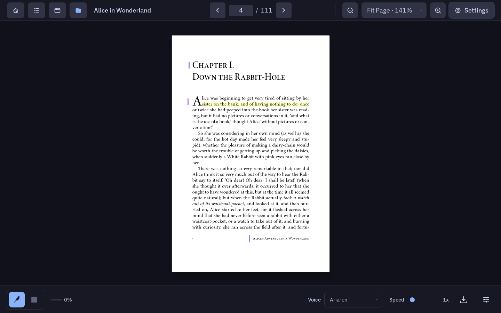

Linux
AppImage / deb
Download a package from a tagged release. Release notes and assets live together on GitHub.
Browse Linux releasesA desktop PDF reader
Every page, read aloud.
A local-first PDF reader for your desktop. Highlight a passage and hear it read aloud. Keep your highlights and reading place between visits.
Read offline. Narrate with a cloud voice.

01 / The reading voice
Read-aloud currently requires an ElevenLabs API key and an internet connection.

02 / Local comes first
Open, view and highlight PDFs fully offline. No Lectrice account required.
Your library, highlights and reading position are saved locally, ready when you return.
Narration today makes a cloud round-trip: the page text you ask to hear is sent to ElevenLabs. It needs your API key, held only for the session. An offline voice is on the roadmap, not in the shipped build.
Read the data & privacy contract03 / Make room for a voice
Choose the distribution for your desktop.
AppImage / deb
Download a package from a tagged release. Release notes and assets live together on GitHub.
Browse Linux releasesApple silicon / Nix
A personal Nix flake channel. Ad-hoc signed, not Apple notarized; not a public Mac installer.
With Nix installed, run:
nix run github:phsb5321/Tauri-PDF-Reader/main#manage -- installUse the dedicated profile to update, or restore the previous generation:
PROFILE="$HOME/.local/state/nix/profiles/lectrice"
"$PROFILE/bin/manage-macos-flake.sh" update
"$PROFILE/bin/manage-macos-flake.sh" rollbackNo Windows package is currently produced. Read the known limitations.